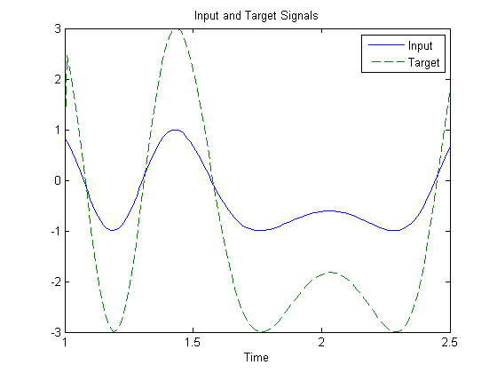
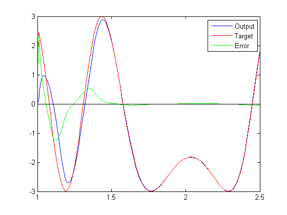

Adaptive Noise Cancellation
A linear neuron is allowed to adapt so that given one signal, it can predict a second signal.
TIME defines the time steps of this simulation. P defines a signal over these time steps. T is a signal derived from P by shifting it to the left, multiplying it by 2 and adding it to itself.
time = 1:0.01:2.5; X = sin(sin(time).*time*10); P = con2seq(X); T = con2seq(2*[0 X(1:(end-1))] + X);
Here is how the two signals are plotted:
plot(time,cat(2,P{:}),time,cat(2,T{:}),'--')
title('Input and Target Signals')
xlabel('Time')
legend({'Input','Target'})
 The linear network must have tapped delay in order to learn the time-shifted correlation between P and T. NEWLIN creates a linear layer. [-3 3] is the expected input range. The second argument is the number of neurons in the layer. [0 1] specifies one input with no delay and one input with a delay of one. The last argument is the learning rate.
net = newlin([-3 3],1,[0 1],0.1);
ADAPT simulates adaptive networks. It takes a network, a signal, and a target signal, and filters the signal adaptively. Plot the output Y in blue, the target T in red and the error E in green. By t=2 the network has learned the relationship between the input and the target and the error drops to near zero.
[net,Y,E,Pf]=adapt(net,P,T);
plot(time,cat(2,Y{:}),'b', ...
time,cat(2,T{:}),'r', ...
time,cat(2,E{:}),'g',[1 2.5],[0 0],'k')
legend({'Output','Target','Error'})
